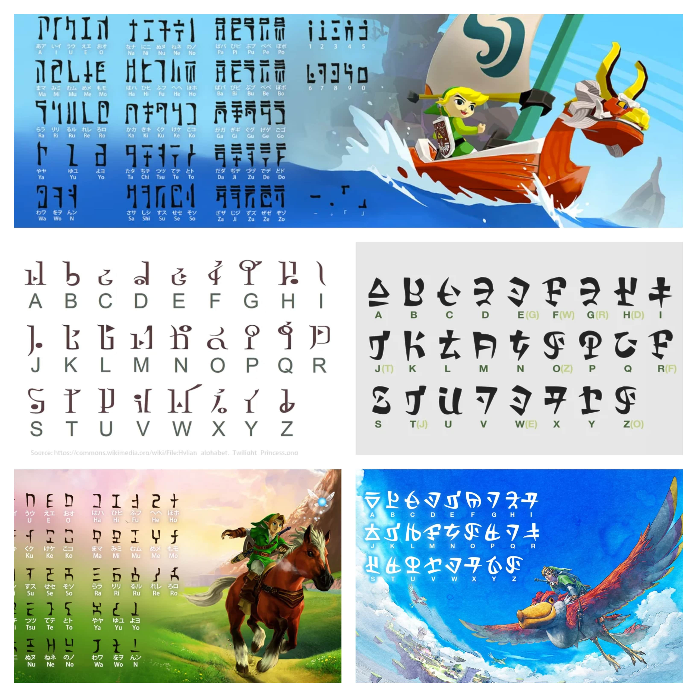
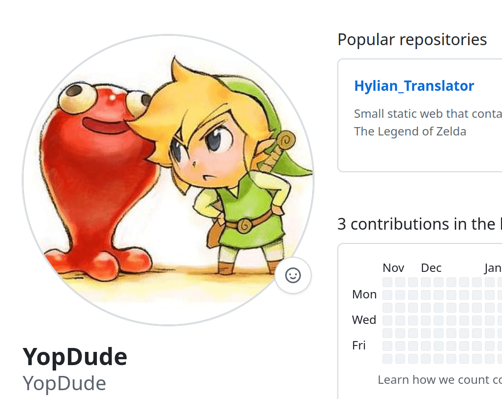
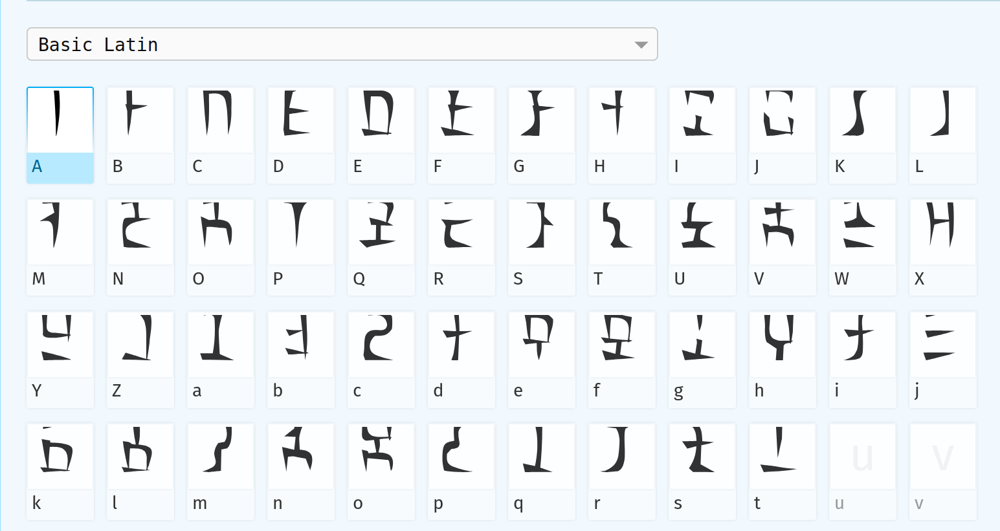
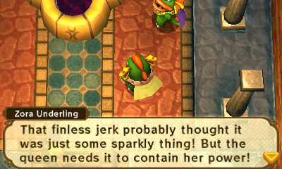

Welcome to the Zelda Hylian Translator, a tool designed to help you convert English text into various versions of Hylian from The Legend of Zelda series.
Fonts for Japanese and English Input
b
The Wind Waker and Ocarina of Time fonts are designed specifically to be used with both Japanese and English romaji input.
All other fonts in the collection, including those for Twilight Princess, Skyward Sword, and Breath of the Wild, are designed for use with the English alphabet.

Downloads & Contributions
l
All files, fonts, and related assets are available for download. You are welcome to fork the repository, make pull requests, or leave comments to contribute to the project. If you have improvements, suggestions, or new font additions, feel free to message or get involved through the GitHub repo

Fonts by:
Sarinilli created the fonts for Skyward Sword, Sheikah and Gerudo: DeviantArt
Plaguelily created the font for Breath of the Wild: DeviantArt
YopDude created the font for Ocarina of Time: GitHub
Font Modifications
n
Some fonts were modified using Glyphr Studio and Font Forge; Free and open-source font editors, to fix missing glyphs or improve the assignment of Unicode values (including: adding Japanese).

Additional Resources
m
For those who are interested in learning more about Hylian, here are a few useful resources:
